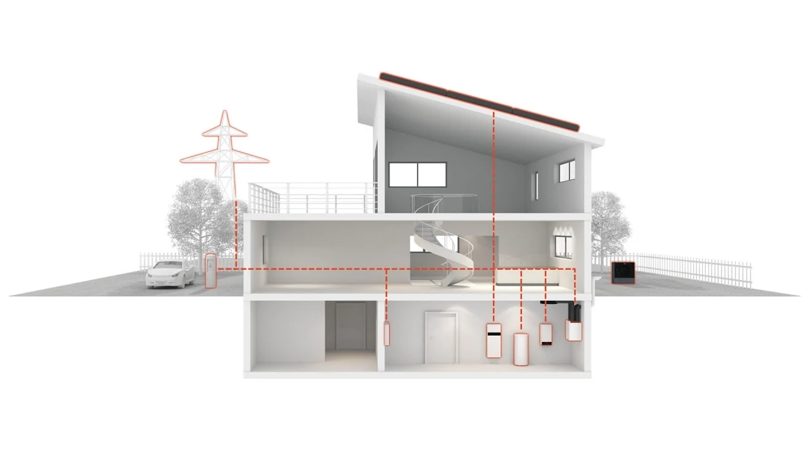

REŠENJA / VODIČ ZA IZBOR OPREME
Kako odabrati odgovarajući sistem grejanja i hlađenja?
Izbor opreme zavisi od vrste objekta, njegovih karakteristika i potreba korisnika. Upoznajte dostupne tehnologije i saznajte šta treba uzeti u obzir pre kupovine.

01 / PLANIRANJE OD POČETKA
Novogradnja
Grejanje, hlađenje i pripremu tople vode posmatrajte zajedno sa izolacijom i namenom objekta. Predvidite prostor za uređaje, razvod i pristup za održavanje pre završnih radova.
- Pripremite podatke o površini, izolaciji i planiranim temperaturama.
- Razmotrite položaj spoljašnje i unutrašnje jedinice.
- Uskladite izvor toplote sa sistemom distribucije.
02 / POSTOJEĆI OBJEKTI
Modernizacija
Pre zamene opreme sagledajte postojeći izvor toplote, razvod, grejna tela i način upravljanja. Razmotrite i toplotne gubitke objekta. Nova oprema treba da odgovara uslovima u kojima će raditi.
- Koji uređaj i energent trenutno koristite?
- Da li postoje radijatori, podno grejanje ili drugi razvod?
- Da li se planira obnova izolacije ili stolarije?
- Da li se menja ceo sistem ili samo deo instalacije?
03 / POSLOVNI I INDUSTRIJSKI OBJEKTI
Oprema za poslovne i industrijske potrebe
INKOM u svojoj ponudi ima opremu za grejanje, klimatizaciju, gasne instalacije, industrijske gasove i zavarivanje.
Za informacije o dostupnim proizvodima i tehničkim karakteristikama kontaktirajte nas kako bismo razmotrili Vaše konkretne potrebe.
Pregled svih kategorija →04 / PRINCIP RADA
Kako funkcioniše toplotna pumpa?
Toplotna pumpa koristi električnu energiju da preuzme toplotu iz okoline i prenese je u sistem grejanja objekta.
IZVORI TOPLOTE
Odakle toplotna pumpa preuzima toplotu?
Toplotne pumpe mogu koristiti energiju iz spoljašnjeg vazduha, zemlje ili vode. Izbor odgovarajućeg sistema zavisi od karakteristika objekta i uslova na lokaciji.
Rashladno sredstvo preuzima toplotu i isparava. Kompresor zatim povećava njegov pritisak i temperaturu, nakon čega se toplota predaje sistemu grejanja. Ciklus se ponavlja.
Električna energija pokreće proces, dok se deo toplote preuzima iz okoline.
ODNOS ULOŽENE I DOBIJENE ENERGIJE
Kako 1 postaje 4?
Primer pri koeficijentu učinka COP 4.
Prikazan je odnos energije pri COP 4, a ne procenat uštede na računu. Stvarni učinak zavisi od uređaja i uslova rada.
Šta govore COP, sezonske vrednosti i potrošnja?
COP se odnosi na određenu radnu tačku. Ne predstavlja univerzalnu godišnju uštedu. Za procenu potrošnje važni su potrebe objekta, temperature izvora i polaza, režim rada i podaci konkretnog modela. Hlađenje je moguće samo kada to podržavaju uređaj i instalacija.
SLEDEĆI KORAK
Potrebna vam je pomoć pri izboru opreme?
Za informacije o dostupnim proizvodima, tehničkim karakteristikama i uslugama kontaktirajte INKOM.